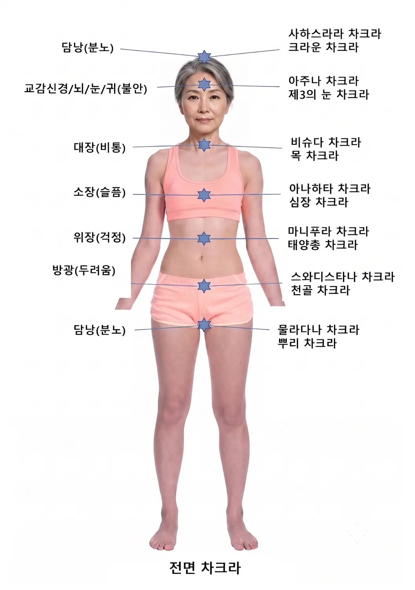

FRONT CHAKRA 04 / 07
아나하타 차크라 (심장)
임맥(CV) CV17 전중혈 · 흉골 중앙 · 소장 (슬픔 해소 & 사랑·기쁨 회복)

[차크라 04] 전면 코일
아나하타 차크라 (심장)
임맥(CV) CV17 전중혈 · 흉골 중앙
연계 장기 및 감정 조절
소장 · 슬픔 해소 & 사랑·기쁨 회복
생체 작용 및 전압 공급
528Hz 사랑과 세포 재생 공명, 흉선 면역 세포 전위 활성화
『노바셀 통치 요법』 196~199쪽 원본 도해 · 전면 쁘라나 코일(Front Coils) 및 바이오 포인트 전압 순환 시스템
528Hz 세포 전압 치유 타이머
DNA 복원 주파수 · 싱잉볼 차임 벨
05:00
528Hz 치유 주파수 준비
* 528Hz 주파수는 손상된 세포 전압을 깨우고 미토콘드리아 ATP 생성을 촉진합니다. 타이머 종료 시 티베트 싱잉볼 차임 벨이 깊고 맑게 울립니다.
⚡ NOVACELL CLINICAL PROTOCOL
임상 가이드 & 증례 분석실 연계
노바셀 의료기 차크라 바이오 포인트 적용 임상 시술 가이드
NovaCell Microcurrent Probe Chakra Protocol & Clinical Pearls
출력 강도 레벨
고전압 미세전류 03~05단계 (편안한 펄스 진동)
펜 도자 접촉 방식
점진적 심부 압박 직각 안착 (Point Compression)
따끔거림 예방 / 전도성
알콜 또는 생리식염수/전도성 미스트 스프레이
📊 임상 시술 순서 (Treatment Sequence)
1단계 [전압 체크]
전중(CV17) 전압 체크 (25~30초)
펜 도자를 해당 차크라 전압 체크 포인트(CV17)에 25~30초간 직각으로 안착하여 분절 에너지 전압 상태를 확인하고 자율신경계 흥분을 안정화합니다.
2단계 [전압 공급]
아나하타 전압 공급 & 528Hz 타이머 (3~5분)
차크라 바이오 포인트에 도자를 수직으로 밀착하고 528Hz 치유 타이머(3~5분)를 가동하여 세포막 전위를 충전하고 쁘라나(생명 에너지) 순환을 극대화합니다.
3단계 [차크라 밸런싱]
상하 차크라 및 후면 축전기 순차 시술
선택된 차크라와 연계된 전면 코일 및 후면 축전기 포인트를 순차적으로 각 1분씩 통전하여 억압된 감정(불안·분노·슬픔·두려움)을 정화하고 전신 생체 전류를 조율합니다.
💡 임상 시술 노하우 & Clinical Pearls
- 해부학적 함요처 직각 안착: 도자 팁을 강하게 비비거나 찌르지 말고, 뼈 경계 오목한 곳(혈자리 및 건·근막 접합부)에 펜촉을 가만히 직각으로 안착시킨 상태에서 전기를 인가합니다.
- 전도성 수분감 유지: 피부 표면에 전도성 미스트나 알콜/생리식염수를 가볍게 도포하여 촉촉한 수분감을 유지하면 미세전류의 심부 침투율과 통전 효율이 극대화되고 따끔거림이 예방됩니다.
- 528Hz 치유 주파수 호흡 동기화: 타이머와 528Hz 음원을 가동하며 환자가 편안한 복식 호흡(들숨 4초, 날숨 6초)을 하도록 유도하면 부교감 신경이 활성화되어 전압 흡수가 최적화됩니다.
- 싱잉볼 알림 종료 후 재평가: 세션 완료 시 맑게 울리는 티베트 싱잉볼 종소리와 함께 도자를 떼고, 관절 가동 범위(ROM)와 통증 경감 및 바이오 에너지 활력을 재평가합니다.